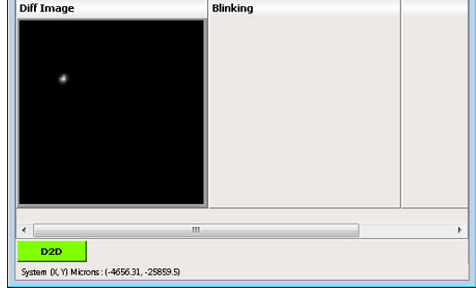
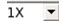
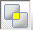
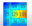
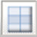
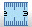

The Image Measurement Unit Window
To access: View > Image Measurement
The Image Measurement Unit (IMU) window consists of display units, where each display unit displays an image or the Cross Section Analysis results. In addition to the display unit area, the IMU window has a tool bar and status bar area.
Description
There are a number of functional areas in the Image Measurement Unit window, illustrated in Figure 1.
Display Unit Area
The display unit area is where the images and the cross-section results are displayed.
Status Bar
The status bar displays information such as defect system coordinates, ruler measurement results, and so on. More specifically:
X, Y — System coordinates of the start point (the point where the mouse was pressed).
dx, dy — The distance between the start point and the endpoint in x and y direction.
Length (1x) — The distance between the start point and the end point @1x (length on wafer). Length (1x) is displayed in nanometers.
Length (4x) — The distance between the start point and the end point @4x (length on mask).
Note:All information (except Length (1x)) displayed in the status bar are in units defined in the dat-ini.xml file. For more details on the configuration of units, refer to “Unit of Measurement Configuration”.
Tool Bar
The tool bar contains icons that access all tools related to the IMU windowTable 1. There are two different modes available, depending on the setting of the mode menu on the left side of the button bar: Fixed Mode and Free Mode (see “Image Measurement Modes”).
Modality Buttons (in the Status Bar)
Modality buttons are located at the bottom of the window. Modality indicates one of the following settings:
D2D
D2DRef
TransRef
NonD2D and Other Modalities
The number of buttons varies depending on the number of modalities a defect has. The user can switch between the modalities by clicking on these buttons. The current modality button is highlighted in green. If you switch between modalities, then the Defect, Reference and Functional images are updated accordingly. You can configure and save the layout of the IMU window for each modality of the defect.
For example, the layout for D2D can be different when compared with the layout for D2DRef. Each of these layouts can be saved separately. Figure 2 shows a defect with D2D modality.
Note:For LRF inspection reports, in the presence of transmitted and reflected defect and reference images, the TransRef modality is displayed in addition to D2D and D2DRef. TransRef assists in simultaneous views of transmitted and reflected images. See “TransRef Modality” for more information.
Figure 2. Defect With Multiple ModalitiesContext-Sensitive Right-Click Menus
There are a number of context-sensitive menus that appear depending on where you right-click on the IMU window. These include:
From any display unit header to select an image to display (see “Specifying the Image or Cross Section Display”).
Inside the image display unit to perform most IMU operations (see “Performing Operations in the Image Display Units”.
On a Cross Section bar in a display unit to rotate the cross section bar (see “Rotating a Cross Section Bar”).
TransRef Modality
TransRef modality is an alternative display mode for the IMU window that enables additional displays of defect and reference images for improved analysis. It is particularly useful if a defect has two reference images (for example, an upper and lower reference image). In this mode, you can display the upper, center, and lower defect reference images simultaneously. This modality also displays images for Transmitted and Reflected inspections, as well as diff images, and enables additional controls for the display of flux areas.
TransRef mode is currently supported only for LRF inspections.
To change image names in TransRef mode, refer to “Configuring Image Type Names in the Grid Display”.
Additionally, when the inspection tool cannot place the defect in the defect die image correctly, you can correct the placement of the defect from reference die to the correct defect die using the ShiftUp and ShiftDown buttons in TransRef modality. Refer to “Manually Swapping Dies” for further information.
Objects
Control |
Description |
Fixed Mode or Free Mode? |
|---|---|---|
Image Measurement Modes |
Selects mode of operation: Fixed Mode or Free Mode. See “Image Measurement Modes” for further information. |
Both |
Zoom and Center Around the Defect  |
Zooms images to the level specified. See “Zooming and Centering Around the Defect” for further details. |
Both |
EDIT |
Configures the layout of the display units. Refer to “Configuring the Image Grid Display” for further information. |
Both |
Create Functional Image |
Creates customized functional images. |
Both |
Display Absolute Difference Image |
Displays Absolute Difference image. The Absolute Difference Image is created between the defect image and reference image and displayed in Diff Image display area of the IMU. |
Both |
Display Signed Difference Image  |
Displays the Signed Difference Image. Signed difference images show the absolute difference between defect and reference that to identify the polarity (dark or clear) of the defect. |
Both |
Display Sum Image |
Displays Sum images. The Sum Image is created between the defect image and reference image and displayed in the Sum Image display area of the IMU. The Sum Image is displayed by default, if the inspection type is NonD2D. Viewing the sum image is similar to viewing the Absolute Difference Image. |
Both |
Display Average Image |
Displays Average image. The Average Image is created between the defect image and reference image and displayed in the Avg Image display area of the IMU. |
Both |
Display Blinking Image |
Displays Blink Images. A Blink Image is an image that toggles between the defect image and reference image with some time interval. The Blink Image is created between the defect image and reference image and displayed in the Blinking image display area of the IMU. Viewing the Blink Image is similar to viewing an Absolute Difference image. |
Both |
Display Cross Section Bar |
Displays the Cross Section Bar and performs Cross Section Analysis. Refer to “Cross Section Analysis” for more information. |
Fixed |
Display Cross Section Enabler |
Displays the cross-section enabler. Refer to “Cross Section Analysis” for more information. |
Fixed |
Overlay GL Matrix on Image  |
Overlays grey level values onto an image in the Image Measurement window. Refer to “Overlaying a Gray Level Matrix” for information. |
Fixed |
Display Flux Area |
Displays the flux area regions on the images displayed in Image Measurement. This assists in calculating the flux area ratio between two images. Refer to “Measuring Flux Area” for further information. Note:
This button is only visible in TransRef comparison mode |
Fixed |
Select Images for Flux
Area |
Displays the Flux Area Image Selection dialog box. Refer to “Selecting Images for Flux Area” for further information. Note:
This button is only visible in TransRef comparison mode |
Fixed |
Display Defect Information  |
Displays defect properties in a Defect Information table. Refer to “Using the Defect Information Table” for further information. Note:
This button is only visible in TransRef comparison mode |
Fixed |
Display Defect Window |
Displays the defect window. The defect window shows the location of the defect on the images displayed in Image Measurement. The defect window is specified in the input inspection files. Refer to “Image Types” for further information. |
Both |
Display Auxiliary Images |
Displays external, plug-in, or layout images. Auxiliary Images are any image other than defect, reference, and functional images. By default, the IMU window displays the defect, reference, and absolute difference images. However, there could be images specified for a defect in the input inspection file. For example, external tiff images, layout images, and plug-in images are some example auxiliary images. Note that the auxiliary image icon is deactivated if there are no auxiliary images associated with a defect. |
Both |
Zoomed Images |
Displays zoomed images of defect and reference images in the IMU window. These images are used to better identify defects. |
Both |
Ruler  |
Measures the distance between two specified points on the image. Refer to “Using the Ruler” for more information. |
Both |
Display Measurement |
Displays CD measurement information such as CDVar, LOC, and CDType. Refer to “Displaying Measurement Values” for more information. |
Both |
Display Defect Contour |
Displays the contour around the defective region on the images. “Displaying Defect Contours” for more information. For LRF formats, the display also includes defect parts information. See “Displaying Defect Parts Location” for more information. |
Both |
Display Contact Measurement Bar |
Contact Measurement measures the area of contact present on the images. Refer to “Contact Measurement” for more information. |
Fixed |
Contact Report |
Generates a report from the output of the Contact Measurement operation. In Fixed Mode, this button only appears if the Display Contact Measurement Bar button is enabled. In Free Mode, this button only appears if you have selected Display Contact from a right-click menu in a display unit. Refer to “Contact Measurement Report” for more information. |
Fixed |
DI-SIGN DI-ABS |
Toggles the sign of Defect Information values. If values are displayed as signed values, click the DI-ABS toggle button to display them as absolute values. If values are displayed as absolute values, click DI-SIGN to display them as signed values. Toggling this button also impacts the sign of attribute values displayed in the Defect Progress Tracking window launched from Defect List > Track Defect. |
Both |